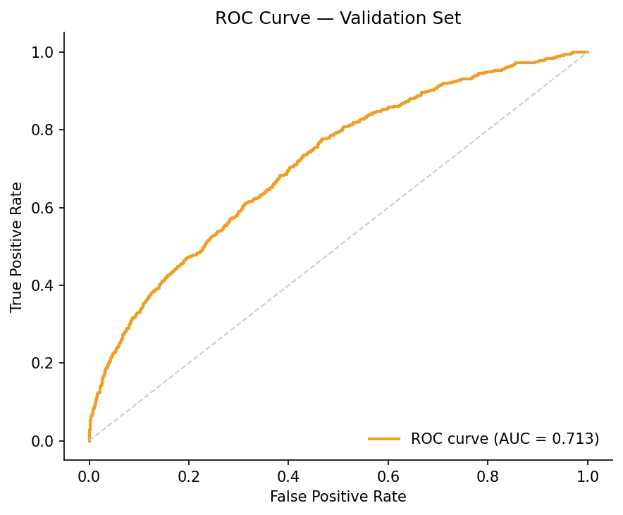
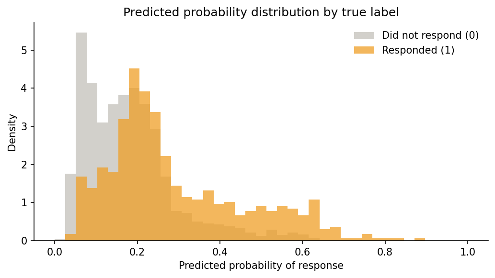
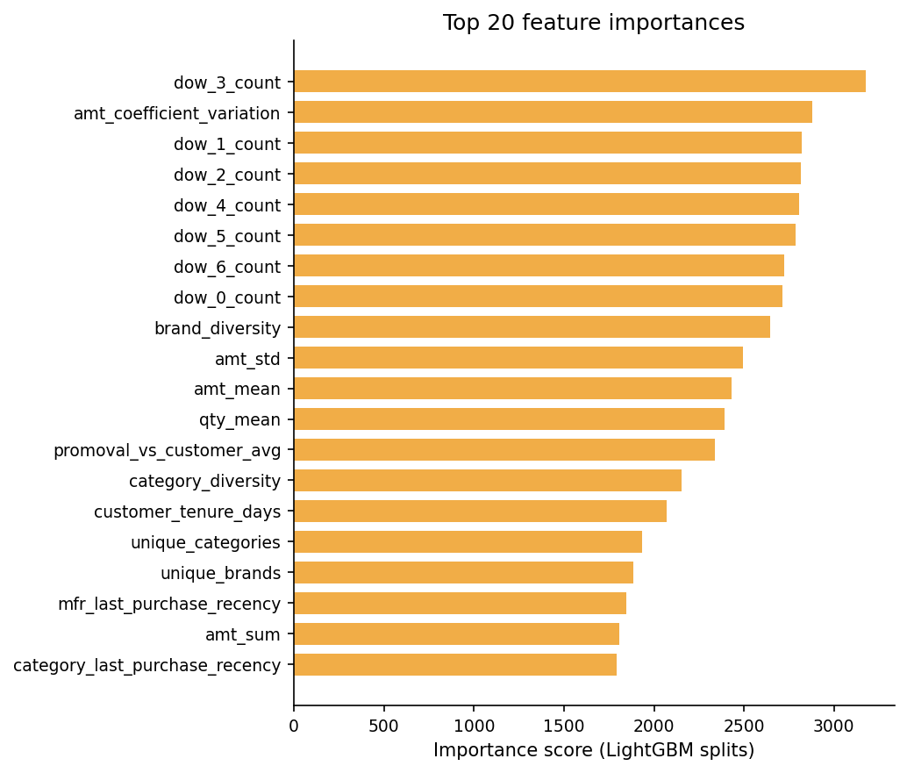
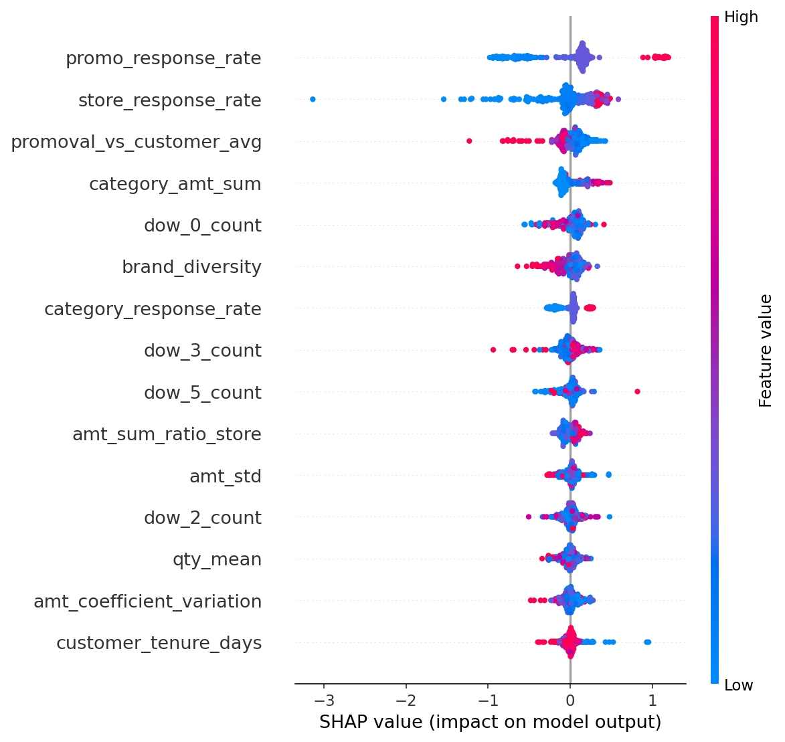
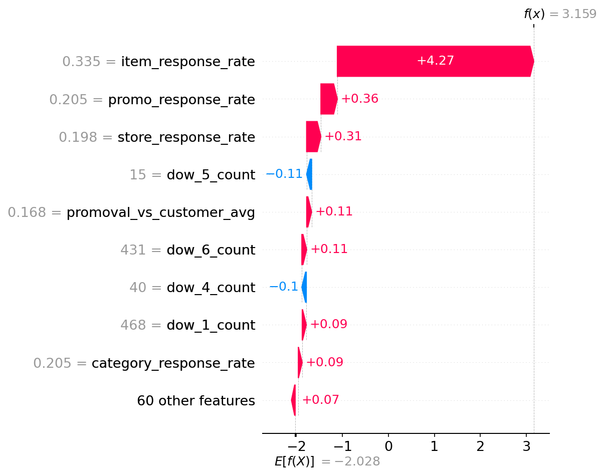

Promotion Response Prediction
A machine learning pipeline that predicts which retail customers are most likely to respond to a promotional offer — enabling smarter campaign targeting, reduced marketing waste, and higher ROI.
The business problem
Retailers send thousands of promotional offers every week. Most go unnoticed — not because customers don't want deals, but because the right offer isn't reaching the right person. Blanket campaigns are expensive and wasteful. The opportunity is in precision: identify, before a campaign launches, which customers are most likely to convert.
This project uses historical transaction data to score each customer's probability of responding to a given promotion. By ranking customers ahead of time, marketing teams can concentrate spend on high-propensity shoppers — improving both response rates and return on ad spend without changing the offer itself.
Key design constraint: all features are computed strictly from transactions that occurred before each promotion date. This temporal leakage prevention ensures the model reflects realistic deployment conditions rather than accidentally learning from the future.
The data
The dataset covers real retail transaction history (~313 MB). March 2013 promotions with observed response labels form the training set; April 2013 promotions without labels form the test set. The task is binary: did the customer respond to the promotion (1) or not (0)?
Feature engineering
Over 50 features were engineered to capture distinct angles of customer behaviour. The goal: give the model enough signal to distinguish a habitual brand loyalist from a casual one-time shopper before the promotion even goes out.
High-cardinality categoricals — customer ID, store, brand, category, manufacturer — were encoded with Bayesian-smoothed target encoding, preserving predictive signal while preventing overfitting on rare categories.
Model performance
LightGBM was selected for its strong performance on tabular data with mixed feature types. Hyperparameters were tuned via grid search; early stopping with a 50-round patience window guarded against over-training. The final model was evaluated on a stratified 80/20 split.
| Split | AUC | Notes |
|---|---|---|
| Training | 0.8751 | 80% stratified sample |
| Validation | 0.7134 | Held-out 20% — primary optimisation metric |
| Gap | 0.162 | Expected with large feature sets; accepted in favour of retaining signal |


The score distribution confirms meaningful class separation. Targeting the top 30% of scored customers would capture a significantly higher share of actual responders than random selection — the direct business value of a well-calibrated response model.
What drove the predictions
Feature importance by LightGBM split count reveals which variables the model reached for most often. Day-of-week purchase counts dominate — not because shopping day is causally important, but because it acts as a proxy for overall engagement intensity. A customer who visits across multiple weekdays consistently is a more habitual buyer, and habitual buyers respond to promotions.

Feature pruning was attempted but abandoned. Removing low-importance variables based on split counts did not improve validation AUC. All 50+ features were retained — a pragmatic trade-off between model simplicity and keeping marginal signal.
Understanding individual predictions
SHAP values show not just which features matter, but in which direction and for whom. Each dot in the beeswarm plot is one validation customer — red for high feature values, blue for low. Right of centre pushed the predicted probability up; left pushed it down.

The SHAP plot tells a cleaner business story than split-count importance. Behavioural persistence — prior response rates — dominates actual score movement. Day-of-week features, which topped the split-count ranking, show tight SHAP distributions around zero: used often by the model, but rarely the deciding factor for individual customers.

This customer has a 33.5% historical item response rate — roughly three times the population average — combined with a strong personal promo response rate and a high store-level response rate. Every signal points the same way. The model scores them at f(x) = 3.159: a near-certain converter, and exactly the kind of customer a well-targeted campaign should prioritise.
Tech stack
The full pipeline from feature engineering to model training and SHAP interpretability runs in a single Jupyter notebook, reproducible on Google Colab in under 10 minutes with no local setup required.
Future directions
A validation AUC of 0.713 is a solid baseline for campaign prioritisation, but several directions could push performance further and make the model more actionable in production:
- Rolling temporal features — trend and seasonality signals over 60/90-day windows to detect whether a customer is becoming more or less engaged
- Customer cohort segmentation — separate models per RFM tier (high-value, at-risk, lapsed) for better calibration within each segment
- Ensemble stacking — combine LightGBM with a calibrated logistic regression to reduce overfitting and improve probability estimates
- SHAP-based feature selection — use mean absolute SHAP values as the pruning criterion, which is more stable than split counts
- Threshold optimisation — tune the decision threshold against the actual business cost of false positives vs false negatives, rather than defaulting to 0.5